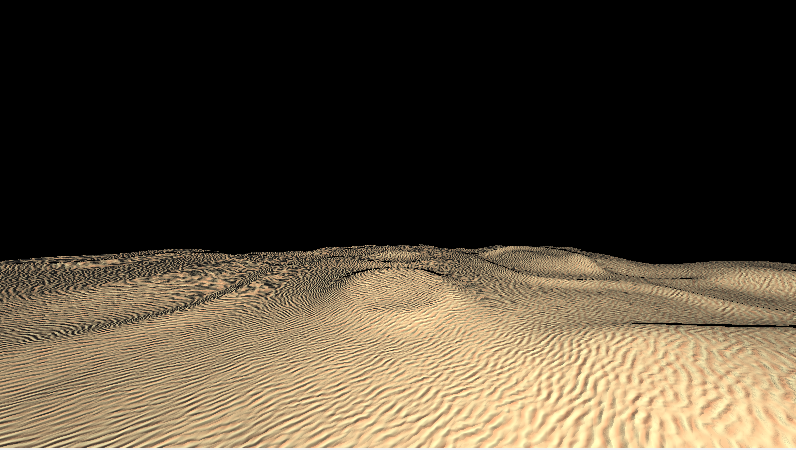

Desert Shader
by Saeed Shamseldin

This document explains the desert generation and rendering system implemented in the GLSL shader code.
Overview
The desert system creates a realistic sandy desert environment with:
-
Multi-layered procedural noise for height
-
Ripple patterns for sand detail
-
Bump mapping for enhanced surface detail
-
Custom shading with desert color gradients
Core Components
1. Desert Noise Functions
n2D - 2D Noise Function
-
Generates 2D gradient noise using hash functions
-
Uses cubic interpolation for smooth results
-
Forms the basis for all terrain generation
surfFunc - Surface Composition
Combines three noise layers with different properties:
1. Base Layer (layer1):
-
Low frequency (0.2)
-
High amplitude (2.0)
-
Creates large-scale terrain features
2. Mid Layer (layer2):
-
Medium frequency (0.275)
-
Medium amplitude (1.0)
-
Adds rolling dunes pattern
3. Detail Layer (layer3):
-
High frequency (1.5)
-
Low amplitude (1.0)
-
Adds fine grain details
The layers are blended with weights (70%/25%/5%) to create the final heightmap.
mapDesert - Terrain SDF
-
Converts the noise heightmap into a signed distance field
-
Returns negative values below terrain surface
-
Positive values above surface
-
Zero at exact surface level
2. Sand Ripple System
sand and sandL - Ripple Generation
-
Creates realistic sand ripple patterns
-
Uses rotated gradient noise for organic patterns
-
Combines multiple ripple directions for natural variation
-
Returns values 0-1 representing ripple intensity
bumpSurf3D - Surface Bump Mapping
-
Combines the large-scale terrain with ripple details
-
Uses finite differences to calculate surface derivatives
-
Blends ripple patterns based on terrain slope
3. Material System
Color Gradients
vec3 desertColor1 = vec3(1.0,.95,.7); // Light sand
vec3 desertColor2 = vec3(.9,.6,.4); // Darker sand
getDesertColor - Shading
-
Samples ripple patterns at terrain position
-
Blends between two desert colors based on ripple intensity
-
Creates natural color variation across dunes
doBumpMap - Normal Mapping
-
Enhances surface normals with high-frequency details
-
Uses finite differences on the combined bump surface
-
Adjustable intensity with bumpfactor parameter
Integration
1. Scene Setup
The desert is added to the scene as a special SDF type:
SDF desert = SDF(
3, // Type 3 = desert
vec3(0.0, -5.0, 0.0), // Position (moves entire desert)
vec3(0.0), // Unused for desert
0.0, // Unused for desert
vec3(1.0, 0.95, 0.7) // Base color
);
2. Rendering Pipeline
When the raymarcher hits the desert surface:
-
Surface Position is calculated via raymarching
-
Normals are computed using central differences
-
Bump Mapping is applied to enhance normals:
This system creates a visually rich desert environment that works seamlessly with the rest of the SDF-based scene while maintaining good performance characteristics.
Show Code
float layer1Amp = 2.0;
float later2Amp = 1.0;
float layer3Amp = 1.0;
float layer1Freq = 0.2;
float later2Freq = 0.275;
float layer3Freq = 0.5*3.0;
vec3 desertColor1 = vec3(1.0,.95,.7);
vec3 desertColor2 = vec3(.9,.6,.4);
// Desert noise functions
float n2D(vec2 p) {
vec2 i = floor(p); p -= i;
p *= p*(3. - p*2.);
return dot(mat2(fract(sin(mod(vec4(0, 1, 113, 114) + dot(i, vec2(1, 113)), 6.2831853))*
43758.5453))*vec2(1. - p.y, p.y), vec2(1. - p.x, p.x) );
}
float surfFunc( in vec3 p){
p /= 2.5;
float layer1 = n2D(p.xz*.2)*2. - .5;
layer1 = smoothstep(0., 1.05, layer1);
float layer2 = n2D(p.xz*.275);
layer2 = 1. - abs(layer2 - .5)*2.;
layer2 = smoothstep(.2, 1., layer2*layer2);
float layer3 = n2D(p.xz*.5*3.);
float res = layer1*.7 + layer2*.25 + layer3*.05;
return res;
}
float mapDesert(vec3 p){
float sf = surfFunc(p);
return p.y + (.5-sf)*2.;
}
// Desert ripple functions
mat2 rot2(in float a){ float c = cos(a), s = sin(a); return mat2(c, s, -s, c); }
vec2 hash22(vec2 p) {
float n = sin(dot(p, vec2(113, 1)));
p = fract(vec2(2097152, 262144)*n)*2. - 1.;
return p;
}
float gradN2D(in vec2 f){
const vec2 e = vec2(0, 1);
vec2 p = floor(f);
f -= p;
vec2 w = f*f*(3. - 2.*f);
float c = mix(mix(dot(hash22(p + e.xx), f - e.xx), dot(hash22(p + e.yx), f - e.yx), w.x),
mix(dot(hash22(p + e.xy), f - e.xy), dot(hash22(p + e.yy), f - e.yy), w.x), w.y);
return c*.5 + .5;
}
float grad(float x, float offs){
x = abs(fract(x/6.283 + offs - .25) - .5)*2.;
float x2 = clamp(x*x*(-1. + 2.*x), 0., 1.);
x = smoothstep(0., 1., x);
return mix(x, x2, .15);
}
float sandL(vec2 p){
vec2 q = rot2(3.14159/18.)*p;
q.y += (gradN2D(q*18.) - .5)*.05;
float grad1 = grad(q.y*80., 0.);
q = rot2(-3.14159/20.)*p;
q.y += (gradN2D(q*12.) - .5)*.05;
float grad2 = grad(q.y*80., .5);
q = rot2(3.14159/4.)*p;
float a2 = dot(sin(q*12. - cos(q.yx*12.)), vec2(.25)) + .5;
float a1 = 1. - a2;
float c = 1. - (1. - grad1*a1)*(1. - grad2*a2);
return c;
}
float sand(vec2 p){
p = vec2(p.y - p.x, p.x + p.y)*.7071/4.;
float c1 = sandL(p);
vec2 q = rot2(3.14159/12.)*p;
float c2 = sandL(q*1.25);
return mix(c1, c2, smoothstep(.1, .9, gradN2D(p*vec2(4))));
}
float bumpSurf3D( in vec3 p){
float n = surfFunc(p);
vec3 px = p + vec3(.001, 0, 0);
float nx = surfFunc(px);
vec3 pz = p + vec3(0, 0, .001);
float nz = surfFunc(pz);
return sand(p.xz + vec2(n - nx, n - nz)/.001*1.);
}
vec3 doBumpMap(in vec3 p, in vec3 nor, float bumpfactor){
const vec2 e = vec2(0.001, 0);
float ref = bumpSurf3D(p);
vec3 grad = (vec3(bumpSurf3D(p - e.xyy),
bumpSurf3D(p - e.yxy),
bumpSurf3D(p - e.yyx)) - ref)/e.x;
grad -= nor*dot(nor, grad);
return normalize(nor + grad*bumpfactor);
}
void getDesertColor(vec3 p, out vec3 color) {
float ripple = sand(p.xz);
color = mix(vec3(1.0,.95,.7), // light sand
vec3(.9,.6,.4), // darker trough
ripple);
}